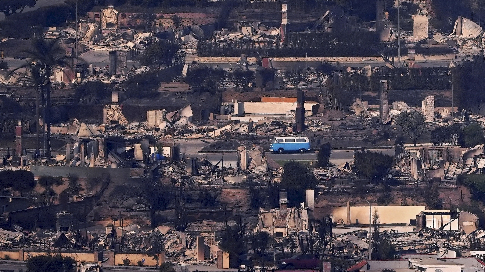
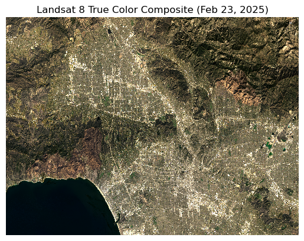
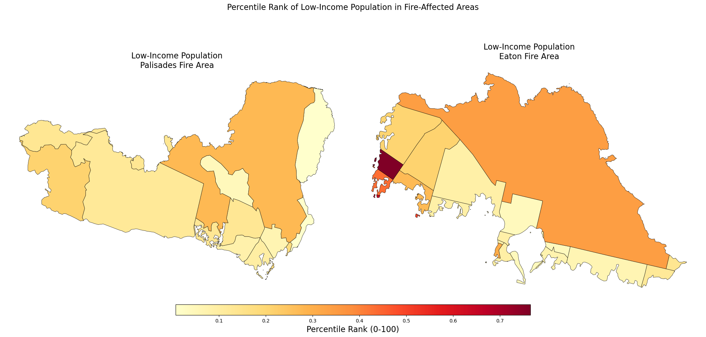
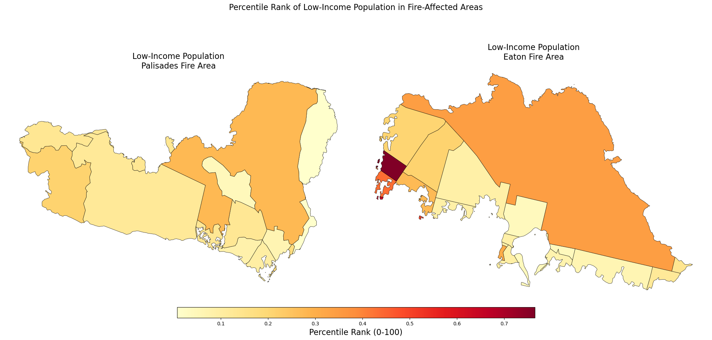

In January 2025, the Eaton and Palisades Fires broke out in Los Angeles County, burning more than 16,000 structures, forcing mass evacuations, and resulting in at least 28 fatalities (Phillips, 2025). Beyond the immediate destruction, these fires left long‑lasting ecological and social impacts. Understanding both the burn severity and the social vulnerability of affected communities is crucial for disaster response and recovery planning.
This blog post combines satellite imagery analysis and social vulnerability data to examine the fires. Using Landsat 8 surface reflectance data, I created true‑color and false‑color composites to visualize burn scars and vegetation loss. I then integrated the Environmental Justice Index (EJI) dataset to assess how wildfire exposure overlapped with vulnerable populations, focusing on minority populations. Together, these analyses highlight how geospatial data science can reveal both ecological damage and social disparities.
 Figure 0. A beacon of hope rises from the Palisades Fire. Source: Volkswagen of America
Highlights of the analysis
Processed fire perimeter shapefiles with GeoPandas to ensure consistent CRS and geometry.
Restored CRS and handled missing values in Landsat 8 imagery.
Created true‑color composites for baseline visualization and false‑color composites to highlight burn scars.
Overlaid fire boundaries on imagery to confirm burn extent.
Clipped EJI census tracts to fire perimeters and mapped minority population indicators.
Dataset descriptions
Eaton and Palisades Fire Perimeter Data:
The Eaton and Palisades dissolved Fire Perimeter (2025) data published by Los Angeles County, provides shapefiles of dissolved polygons of the Eaton and Palisades fire perimeters. These files of which were daily perimeter snapshots, were merged to create a single fire perimeter for each fire. This dataset was from the NIFC FIRIS fire service and is hosted on ArcGIS Hub containing data for both fires. You can access the data here.
Landsat 8 Data:
Landsat 8 Data NetCDF dataset containing atmospherically corrected reflectance data from Landsat 8 via the Microsoft Planetary Computer. Includes spectral bands (red, green, blue, near-infrared, shortwave infrared) clipped to the Eaton and Palisades fire perimeters. You can access the data here.
Environmental Justice Index (EJI) Data:
Census-tract level socioeconomic and demographic indicators estimating vulnerability, recovery potential, and mitigation capacity. Variables include population, housing, transportation, and socioeconomic status. You can access the data here.
Step 1: Import Libraries & Load Data
Setup
Load the needed packages, import fire perimeters, Landsat bands and EJI data.
Load in Libraries
Code
# Import required libraries for geospatial analysis and visualizationimport osimport numpy as npimport rioxarray as rioimport matplotlib.pyplot as pltimport geopandas as gpdimport xarray as xr# Activate and Import netCDF4import netCDF4# Check activation and versionprint(netCDF4.__version__)
1.7.3
Load Fire Perimeter, Landsat and EJI Data
Fire perimeters provide the spatial boundaries of interest for the analysis.
Code
# Load fire perimeter shapefileseaton = gpd.read_file('data\eaton_fire\Eaton_Perimeter_20250121.shp')# Load fire perimeter shapefilespalisades = gpd.read_file('data\palisades_fire\Palisades_Perimeter_20250121.shp')# Generate variable for pathNC_fp = os.path.join('data','landsat8-2025-02-23-palisades-eaton.nc')# Use netCDF4landsat = xr.open_dataset("data/landsat8-2025-02-23-palisades-eaton.nc", engine="netcdf4")# Read in the EJI datasetca_eji_fp ='data/EJI_2024_California/EJI_2024_California.gdb'ca_eji = gpd.read_file(ca_eji_fp)
Prepare Landsat Data
Restoring Spatial Information
The Landsat dataset includes a spatial_ref variable but does not automatically recognize its CRS. We restored the CRS to EPSG:32611 (WGS 84 / UTM zone 11N) to ensure proper alignment with fire perimeter polygons. Clouded areas contained missing values (NaNs), which we replaced with zeros to allow clean visualization.
Code
# Recover the geospatial information from spatial_reflandsat = landsat.rio.write_crs(landsat.spatial_ref.crs_wkt)# Substitute any nan values for 0landsat = landsat.fillna(0)# Identify which bands have nan values using numpy.isnan()nan_bands = []for band in ['red', 'green', 'blue', 'nir08', 'swir22']:if np.isnan(landsat[band]).any(): nan_bands.append(band)print("Bands with NaN values:", nan_bands)
Bands with NaN values: []
True Color Visualization
A true‑color composite combines the red, green, and blue bands to produce a natural‑looking image of the fire area. This visualization provides a baseline view of the landscape as it would appear to the human eye, helping establish context before moving to false‑color analysis.
Code
# Re-plot with the true color imagelandsat[['red', 'green', 'blue']].to_array().plot.imshow(robust =True)plt.title('Landsat 8 True Color Composite (Feb 23, 2025)')plt.axis('off')plt.show()plt.figtext(0.5, -0.05, "Figure 1. Landsat 8 true‑color composite of the Eaton and Palisades fire area, showing the landscape as it appears to the human eye. Source: Microsoft Planetary Computer (Landsat 8 Collection 2 Level‑2).", wrap=True, ha="center", fontsize=10)

Text(0.5, -0.05, 'Figure 1. Landsat 8 true‑color composite of the Eaton and Palisades fire area, showing the landscape as it appears to the human eye. Source: Microsoft Planetary Computer (Landsat 8 Collection 2 Level‑2).')
<Figure size 640x480 with 0 Axes>
The robust=True parameter ensures that extreme outliers (such as bright clouds) do not distort the color scaling.
False Color Visualization
False‑color imagery uses non‑visible wavelengths to highlight features that are difficult to discern in true color. By assigning SWIR → Red, NIR → Green, and Red → Blue, we create a composite where healthy vegetation appears bright green, burned areas appear reddish‑brown, and urban areas appear in neutral tones. This visualization makes fire impacts much more visible.
Code
# Specify bands for false color compositelandsat[['swir22', 'nir08', 'red']].to_array().plot.imshow(robust =True)plt.title('False Color Composite (SWIR/NIR/Red)')plt.show()plt.figtext(0.5, -0.05, "Figure 2. Landsat 8 false‑color composite highlighting burn scars and vegetation stress. Healthy vegetation appears bright green, while burned areas appear reddish‑brown. Source: Microsoft Planetary Computer (Landsat 8 Collection 2 Level‑2).", wrap=True, ha="center", fontsize=10)
Text(0.5, -0.05, 'Figure 1. Landsat 8 true‑color composite of the Eaton and Palisades fire area, showing the landscape as it appears to the human eye. Source: Microsoft Planetary Computer (Landsat 8 Collection 2 Level‑2).')
<Figure size 640x480 with 0 Axes>
Visualize False Color Image with Fire Perimeters
To confirm spatial alignment, we reprojected the fire perimeter shapefiles to match the Landsat CRS. Overlaying these boundaries on the false‑color composite allows us to directly compare burn scars with official fire data. In the visualization, the Eaton Fire perimeter is outlined in red and the Palisades Fire in blue.
Code
# Reproject fire perimeters to match Landsat CRSeaton = eaton.to_crs(landsat.rio.crs)palisades = palisades.to_crs(landsat.rio.crs)# Create comprehensive mapfig, ax = plt.subplots(figsize=(10, 10))# Plot false color compositelandsat[['swir22', 'nir08', 'red']].to_array().plot.imshow( ax=ax, robust=True, add_colorbar=False)# Add Palisades and Eaton fire perimeterseaton.boundary.plot(ax=ax, edgecolor='blue', linewidth=2)palisades.boundary.plot(ax=ax, edgecolor='red', linewidth=2)# Add false color rasterlandsat[["swir22", "nir08", "red"]].to_array().plot.imshow(robust=True)# Add titleax.set_title('Landsat 8 False Color Image of the Palisades and Eaton Fire Perimeters')# Add labels with gray backgroundplt.figtext(0.20, 0.51, "Palisades Fire", color='red', fontsize=12, bbox=dict(facecolor='white'))plt.figtext(0.80, 0.50, "Eaton Fire", color='red', fontsize=12, bbox=dict(facecolor='white'))# Remove axesax.axis('off')# Display the mapplt.tight_layout()plt.show()plt.figtext(0.5, -0.05, "Figure 3. False‑color composite with Eaton (red outline) and Palisades (blue outline) fire perimeters overlaid, confirming alignment between burn scars and official fire boundaries. Source: Los Angeles County Fire Perimeter Data (2025), Microsoft Planetary Computer.", wrap=True, ha="center", fontsize=10)
Text(0.5, -0.05, 'Figure 3. False‑color composite with Eaton (red outline) and Palisades (blue outline) fire perimeters overlaid, confirming alignment between burn scars and official fire boundaries. Source: Los Angeles County Fire Perimeter Data (2025), Microsoft Planetary Computer.')
<Figure size 640x480 with 0 Axes>
Figure Interpretation
The Eaton fire (overlaid in blue) and the Palisades fire (overlaid in red) outline the burn perimeter. This false color composite displays the Eaton and Palisades fire areas captured by Landsat 8 on February 23, 2025. The image uses shortwave infrared (SWIR), near-infrared (NIR), and red bands to highlight burn scars and vegetation health.
Key features:
Bright green areas: Healthy vegetation (high NIR reflectance)
Reddish-brown areas: Burned areas and bare soil (low NIR, moderate SWIR)
Urban/developed areas: Neutral colors (moderate reflectance across bands)
Social Vulnerability (EJI)
This analysis examines socioeconomic characteristics of communities impacted by the fires. While fires affect all habitats, they do not impact all communities equally. We used the Environmental Justice Index (EJI) to identify socioeconomic vulnerability within fire perimeters.
In this example, the code focuses on the low‑income population variable, but the same workflow can be applied to other indicators (e.g., elderly residents, disability prevalence). Mapping these values within fire boundaries highlights communities that may face greater challenges during evacuation and recovery.
Match the CRS of the EJI data to Landsat data.
Code
# Reproject all datasets to the same crseaton = eaton.to_crs(ca_eji.crs)palisades = palisades.to_crs(ca_eji.crs)
Clip EJI data to the fire perimeter extents.
Code
# Clip tracts to the palisades and eaton fire perimeterseji_palisades_clip = gpd.clip(ca_eji, palisades)eji_eaton_clip = gpd.clip(ca_eji, eaton)
Return the intersecting census tracks in the fire perimeter.
Code
# Get the EJI tracts intersecting the palisades fire perimetereji_palisades_join = gpd.sjoin(ca_eji, palisades, how='inner', predicate='intersects')
Visialize Social Vulnerability
Social vulnerability varies significantly across communities affected by wildfires. To understand which areas may face greater challenges during and after the fires, we visualize the EJI indicator for minority populations within census tracts intersecting the Eaton and Palisades fire perimeters.
In this analysis, we focus on the proportion of residents identified as minority populations. These communities often experience disproportionate impacts from disasters due to systemic inequities, including reduced access to resources, barriers to recovery assistance, and heightened exposure to environmental hazards. By comparing the spatial distribution of minority populations across the Palisades and Eaton fire areas, we can identify neighborhoods that may require additional support and targeted interventions.
This dual map showcases the percentage of minority residents in census tracts within each fire perimeter. This comparison reveals whether one fire disproportionately affected communities with higher concentrations of socially vulnerable minority populations, highlighting the importance of integrating demographic data into disaster response planning.
Code
fig, (ax1, ax2) = plt.subplots(1, 2, figsize=(20, 10))# Define common scale for comparisoneji_variable ='EPL_POV200'#eji_variable = 'E_AGE65'vmin =min(eji_palisades_clip[eji_variable].min(), eji_eaton_clip[eji_variable].min())vmax =max(eji_palisades_clip[eji_variable].max(), eji_eaton_clip[eji_variable].max())# Eaton Ploteji_eaton_clip.plot( column=eji_variable, vmin=vmin, vmax=vmax, cmap='YlOrRd', legend=False, ax=ax2, edgecolor='black', linewidth=0.5)ax2.set_title('Low-Income Population\nEaton Fire Area', fontsize=16)ax2.axis('off')# Palisades Ploteji_palisades_clip.plot( column=eji_variable, vmin=vmin, vmax=vmax, cmap='YlOrRd', legend=False, ax=ax1, edgecolor='black', linewidth=0.5)ax1.set_title('Low-Income Population\nPalisades Fire Area', fontsize=16)ax1.axis('off')# Overall titlefig.suptitle('Percentile Rank of Low-Income Population in Fire-Affected Areas', fontsize=16)# Shared colorbarsm = plt.cm.ScalarMappable( cmap='YlOrRd', norm=plt.Normalize(vmin=vmin, vmax=vmax))cbar_ax = fig.add_axes([0.25, 0.10, 0.5, 0.03])cbar = fig.colorbar(sm, cax=cbar_ax, orientation='horizontal')cbar.set_label('Percentile Rank (0-100)', fontsize=16)plt.tight_layout()plt.show()plt.figtext(0.5, -0.05, "Figure 4. Environmental Justice Index (EJI) minority population indicator mapped within census tracts intersecting the Eaton and Palisades fire perimeters. Darker shades represent higher percentages of minority residents. Source: CDC/ATSDR Environmental Justice Index (2024).", wrap=True, ha="center", fontsize=10)

Text(0.5, -0.05, 'Figure 4. Environmental Justice Index (EJI) minority population indicator mapped within census tracts intersecting the Eaton and Palisades fire perimeters. Darker shades represent higher percentages of minority residents. Source: CDC/ATSDR Environmental Justice Index (2024).')
<Figure size 640x480 with 0 Axes>
Figure Interpretation
This analysis reveals the socioeconmic vulnerability within each of the fire perimeters. The maps show percentile rankings of low-income population (households earning less than 200% of the federal poverty level) within census tracts. The higher percentile values (dark red) indicate greater economic vulnerability.
Eaton Fire Area:
The burn area shows higher percentile rankings compared to the Palisades area, with large portions in the 50th-70th percentiles and some tracts reaching the 80th-90th percentiles (Altadena). On average, these darker areas demonstrate that fires disproportionately affected communities that are more socioeconomically vulnerable.
Palisades Fire Area:
The Palisades perimeter and its census tracts show predominantly low to moderate percentile rankings (roughly 10th-40th percentiles). This indicates that there was proportionaly less socioeconomically vulnerable communities affected by the Palisades fire.
Environmental Justice Implications:
These contrasting patterns reveal that while fires affect habitats, communities and individuals, those that are socioeconomically disadvantaged are disproportionaly affected due to less expendible income/assets that would otherwise allow for post-fire transition. This analysis does however provide a glimpse of how communities and local governments can:
Train for Emergency preparedness
Spot-targeting communities that are most vulnerable
Plan for adaptation and mitigation strategies to address natural disasters
Conclusion
By combining satellite imagery with census‑based vulnerability data, this analysis reveals both the ecological and social dimensions of wildfire impacts. False‑color composites highlight burn severity, while EJI data provide a flexible framework for exploring different aspects of community vulnerability. Whether focusing on income, age, disability, or health, this integrated approach shows not only where fires burned, but also which populations may face disproportionate challenges in recovery. As climate change intensifies wildfire risk, integrating physical and social data is essential for equitable disaster response and planning.
References
Palisades and Eaton Dissolved Fire Perimeters. (2025). Fire perimeter shapefiles [Geospatial dataset]. ArcGIS Hub. https://hub.arcgis.com/maps/ad51845ea5fb4eb483bc2a7c38b2370c [Accessed Nov. 24, 2025]
U.S. Geological Survey. (2025). Landsat 8 Collection 2 Level-2 surface reflectance data [Satellite imagery dataset]. Microsoft Planetary Computer. https://planetarycomputer.microsoft.com/dataset/landsat-c2-l2 [Accessed Nov. 24, 2025]
Bennett, M. M., Chen, J. K., Alvarez León, L. F., & Gleason, C. J. (2022). The politics of pixels: A review and agenda for critical remote sensing. Progress in Human Geography, 46(3), 729–752. https://doi.org/10.1177/03091325221074691 [Accessed Nov. 24, 2025]
Galaz García, C., Cawse-Nicholson, K., Frew, A., & Fontenot, R. (2024). EDS 220: Working with environmental datasets [Course materials]. Master of Environmental Data Science, Bren School of Environmental Science & Management, University of California, Santa Barbara. https://meds-eds-220.github.io/MEDS-eds-220-course/ [Accessed Nov. 24, 2025]


Social Vulnerability (EJI)
This analysis examines socioeconomic characteristics of communities impacted by the fires. While fires affect all habitats, they do not impact all communities equally. We used the Environmental Justice Index (EJI) to identify socioeconomic vulnerability within fire perimeters.
In this example, the code focuses on the low‑income population variable, but the same workflow can be applied to other indicators (e.g., elderly residents, disability prevalence). Mapping these values within fire boundaries highlights communities that may face greater challenges during evacuation and recovery.
Match the CRS of the EJI data to Landsat data.
Code
Clip EJI data to the fire perimeter extents.
Code
Return the intersecting census tracks in the fire perimeter.
Code
Visialize Social Vulnerability
Social vulnerability varies significantly across communities affected by wildfires. To understand which areas may face greater challenges during and after the fires, we visualize the EJI indicator for minority populations within census tracts intersecting the Eaton and Palisades fire perimeters.
In this analysis, we focus on the proportion of residents identified as minority populations. These communities often experience disproportionate impacts from disasters due to systemic inequities, including reduced access to resources, barriers to recovery assistance, and heightened exposure to environmental hazards. By comparing the spatial distribution of minority populations across the Palisades and Eaton fire areas, we can identify neighborhoods that may require additional support and targeted interventions.
This dual map showcases the percentage of minority residents in census tracts within each fire perimeter. This comparison reveals whether one fire disproportionately affected communities with higher concentrations of socially vulnerable minority populations, highlighting the importance of integrating demographic data into disaster response planning.
Code

Figure Interpretation
This analysis reveals the socioeconmic vulnerability within each of the fire perimeters. The maps show percentile rankings of low-income population (households earning less than 200% of the federal poverty level) within census tracts. The higher percentile values (dark red) indicate greater economic vulnerability.
Eaton Fire Area:
The burn area shows higher percentile rankings compared to the Palisades area, with large portions in the 50th-70th percentiles and some tracts reaching the 80th-90th percentiles (Altadena). On average, these darker areas demonstrate that fires disproportionately affected communities that are more socioeconomically vulnerable.
Palisades Fire Area:
The Palisades perimeter and its census tracts show predominantly low to moderate percentile rankings (roughly 10th-40th percentiles). This indicates that there was proportionaly less socioeconomically vulnerable communities affected by the Palisades fire.
Environmental Justice Implications:
These contrasting patterns reveal that while fires affect habitats, communities and individuals, those that are socioeconomically disadvantaged are disproportionaly affected due to less expendible income/assets that would otherwise allow for post-fire transition. This analysis does however provide a glimpse of how communities and local governments can:
Conclusion
By combining satellite imagery with census‑based vulnerability data, this analysis reveals both the ecological and social dimensions of wildfire impacts. False‑color composites highlight burn severity, while EJI data provide a flexible framework for exploring different aspects of community vulnerability. Whether focusing on income, age, disability, or health, this integrated approach shows not only where fires burned, but also which populations may face disproportionate challenges in recovery. As climate change intensifies wildfire risk, integrating physical and social data is essential for equitable disaster response and planning.